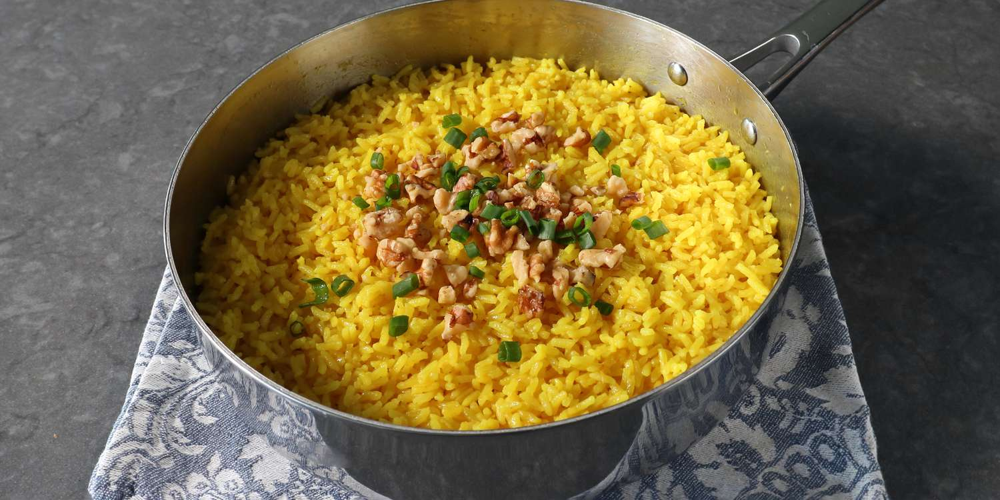

Golden Butter Rice

Description
This golden butter rice, flavored with ginger and turmeric, is a forgotten way of cooking butter rice. It isn't cooked rice with butter stirred in, it really is rice cooked in butter. This is my favorite version, with seasonings inspired by a classic Indian drink called golden milk.
Ingredients
- 1/2 cup unsalted butter
- 1 tablespoon finely grated fresh ginger
- 1 1/4 teaspoons ground turmeric
- 1/4 teaspoon cayenne pepper
- 1 tablespoon brown sugar
- 1 teaspoon fine salt
- 2 cups basmati rice or other long grain white rice
- 3 cups water
- 1/3 cup chopped walnuts (optional)
- 1/3 cup sliced green onions (optional)
Steps
- Melt butter in a pan or pot with a tight-fitting lid over medium heat. As soon as butter starts to bubble, add in ginger, turmeric, cayenne, brown sugar, and salt. Cook, whisking, for 1 minute.
- Add rice, and stir until every grain is coated with butter. Stir in water, and bring to a boil over high heat. As soon as it begins to boil, gently shake and swirl the pan to settle rice into an even layer, then reduce heat to medium-low.
- Cover tightly and simmer for 15 minutes. Turn off heat, and let rest, covered, for 10 minutes. DO NOT lift the lid or try to stir yet.
- Now, remove the lid and use a fork to fluff and separate rice grains. Season to taste, and serve immediately, garnished with walnuts and green onions.
Chef's Note:
The times given are for basmati rice. If using another long grain white rice, adjust times according to package directions.